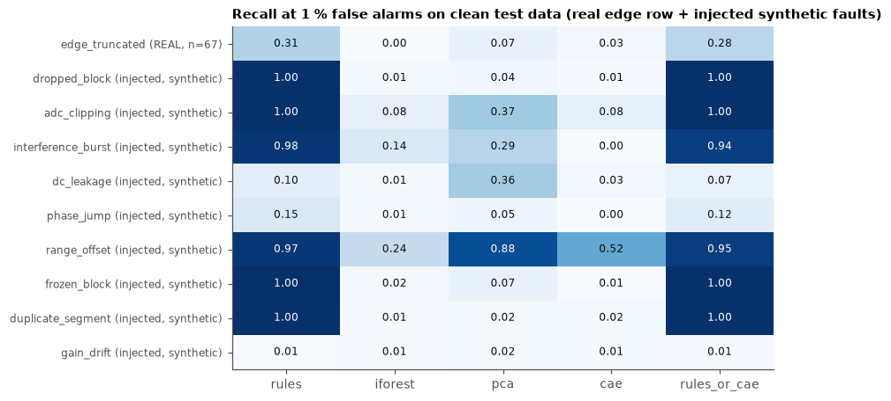
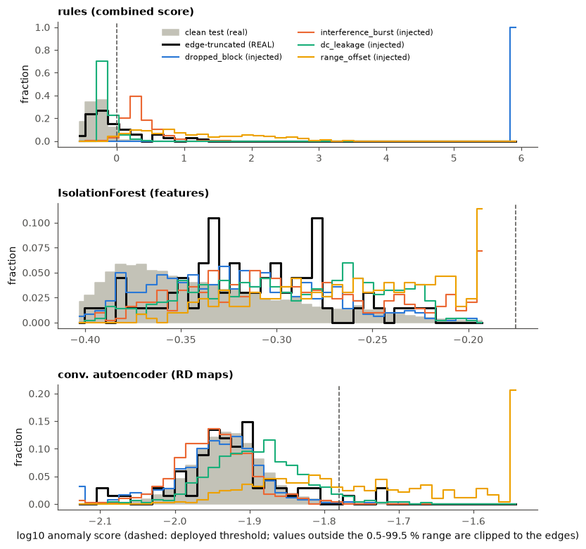
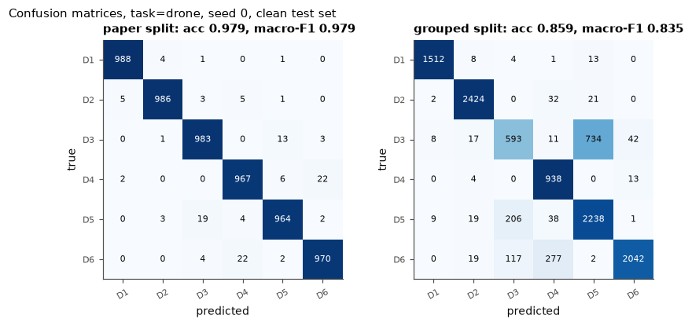
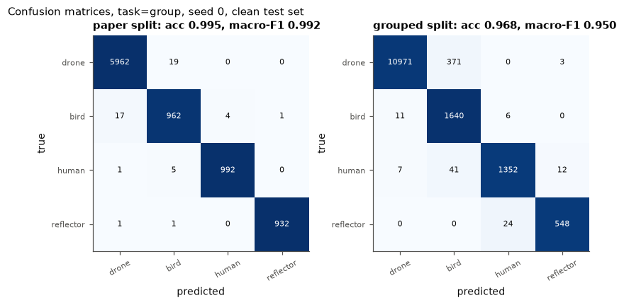
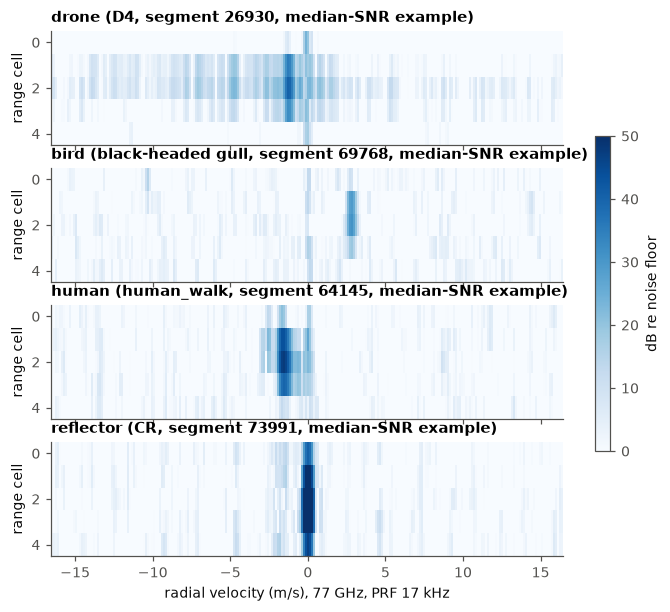
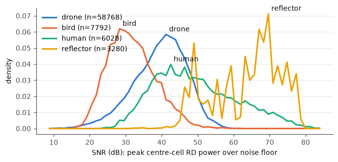
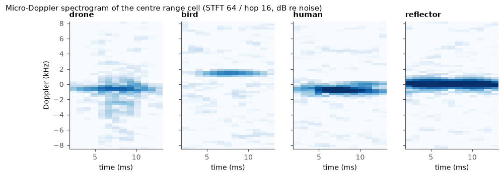

Radar data pipeline
Ingest, DSP, quality checks, ML anomaly detection and leakage-safe training data on real 77 GHz FMCW radar measurements (SAAB SIRS 1600, drones, birds, humans, corner reflector). Data: Karlsson, Jansson, Hamalainen, Zenodo 10.5281/zenodo.5845259, CC BY 4.0. All numbers generated by the pipeline; injected faults are synthetic.
Headline results
| segments / measurements | 75868 / 130 |
| exact duplicate segments found at ingest | 57 (incl. a seagull vs black-headed gull label conflict) |
| real segments with any integrity flag | 565 (0.7 %) |
| REAL edge-truncated segments, recall at 1 % FA: rules / IsolationForest / PCA / CAE | 0.31 / 0.00 / 0.07 / 0.03 |
| dropped_block (injected, synthetic), recall at 1 % FA: rules / IsolationForest / PCA / CAE | 1.00 / 0.01 / 0.04 / 0.01 |
| dc_leakage (injected, synthetic), recall at 1 % FA: rules / IsolationForest / PCA / CAE | 0.10 / 0.01 / 0.36 / 0.03 |
| range_offset (injected, synthetic), recall at 1 % FA: rules / IsolationForest / PCA / CAE | 0.97 / 0.24 / 0.88 / 0.52 |
| gain_drift (injected, synthetic), recall at 1 % FA: rules / IsolationForest / PCA / CAE | 0.01 / 0.01 / 0.02 / 0.01 |
| drone/bird/human/reflector CNN macro-F1: paper split vs grouped split | 0.990 vs 0.953 |
| 6 drone types CNN macro-F1: paper split vs grouped split | 0.980 vs 0.844 |
| quality filtering (grouped, class group): macro-F1 filtered vs unfiltered train set | 0.953 vs 0.956 |
Catalogue summary (click a header to sort)
| label | class group | measurements | segments | SNR mean dB | Doppler spread Hz | uD bandwidth Hz | edge truncated | rule flagged | time gaps |
|---|---|---|---|---|---|---|---|---|---|
| D5 | drone | 4 | 12093 | 34.79 | 1115.1 | 3094.6 | 0 | 131 | 38 |
| D6 | drone | 15 | 11252 | 41.91 | 709.0 | 2853.0 | 8 | 48 | 61 |
| D3 | drone | 4 | 10212 | 38.81 | 598.7 | 2013.8 | 0 | 0 | 7 |
| D2 | drone | 9 | 9555 | 45.09 | 477.2 | 3263.3 | 0 | 4 | 2 |
| D4 | drone | 4 | 8735 | 39.54 | 932.7 | 2844.7 | 3 | 22 | 11 |
| D1 | drone | 8 | 6921 | 37.19 | 777.8 | 1425.4 | 0 | 28 | 24 |
| human_walk | human | 7 | 4529 | 50.29 | 240.5 | 2316.9 | 0 | 4 | 6 |
| black-headed gull | bird | 11 | 4364 | 32.14 | 850.3 | 1206.4 | 7 | 70 | 192 |
| CR | reflector | 19 | 3280 | 63.66 | 78.1 | 2280.8 | 0 | 210 | 1 |
| seagull | bird | 34 | 2550 | 31.86 | 897.3 | 1093.2 | 43 | 30 | 99 |
| human_run | human | 4 | 1499 | 46.73 | 434.1 | 3771.1 | 0 | 5 | 3 |
| seagull and black-headed gull | bird | 4 | 440 | 30.26 | 991.2 | 784.7 | 0 | 1 | 20 |
| heron | bird | 5 | 387 | 25.82 | 1365.9 | 722.1 | 0 | 0 | 6 |
| pigeon | bird | 1 | 32 | 46.13 | 269.9 | 2417.4 | 4 | 6 | 1 |
| raven | bird | 1 | 19 | 40.41 | 578.8 | 3391.8 | 2 | 6 | 0 |
Figures






